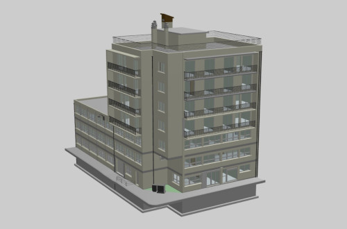
3D Tiles Building
Display a 3D Tiles building converted from a IFC file with py3dtiles.
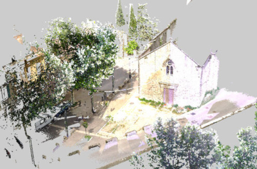
3D Tiles Point Cloud
Display a 3D Tiles point cloud.
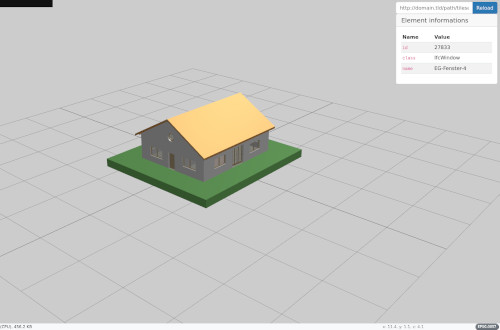
3D Tiles Simple Viewer
Display any 3D Tiles from a url.
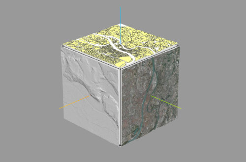
3D Transformations
Transform objects using position, rotation and scale.

Atmosphere
Create a realistic atmosphere and sky dome.
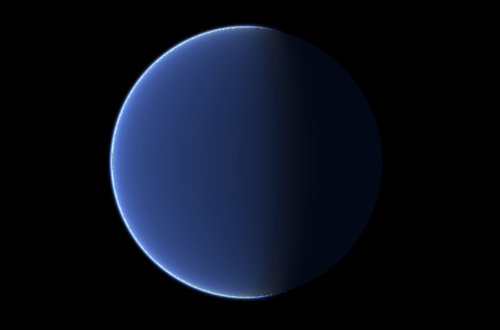
Atmosphere
Create a realistic atmosphere and sky dome.
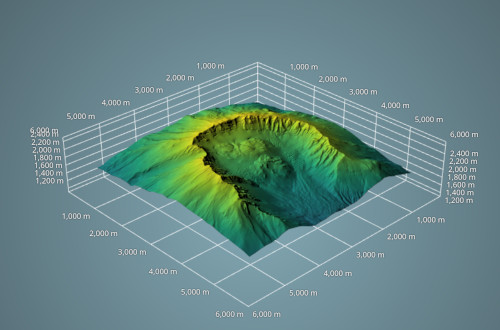
AxisGrid
Illustrates the use of the AxisGrid entity.
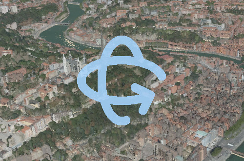
Custom controls
Illustrates the use of the camera-controls plugin.
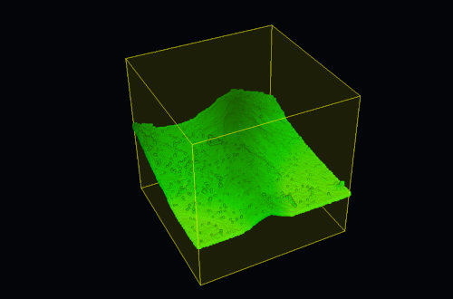
Clipping planes
Clip various entities with clipping planes.
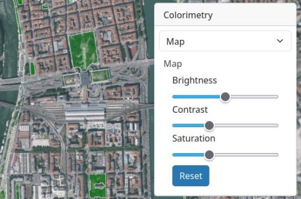
Color Adjustments
Set brightness, constrast, and saturation on color layers and maps.
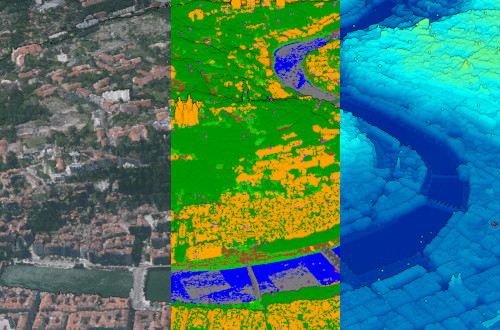
Colorized 3D Tiles Point Cloud
Illustrates colorization of point clouds with multiple modes.
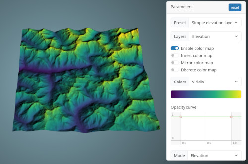
Color maps
Use colormaps to emphasize elevation and terrain features.
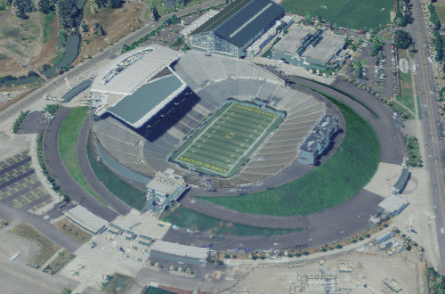
COPC
Display a Cloud optimized point cloud
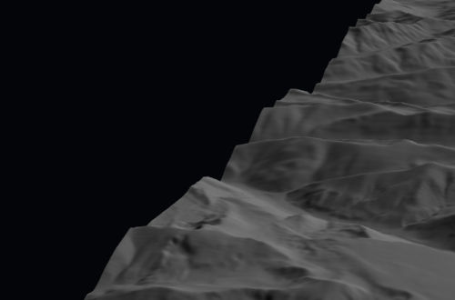
Cropped Elevation COG
Check that an elevation COG works correctly at the edge of the map.
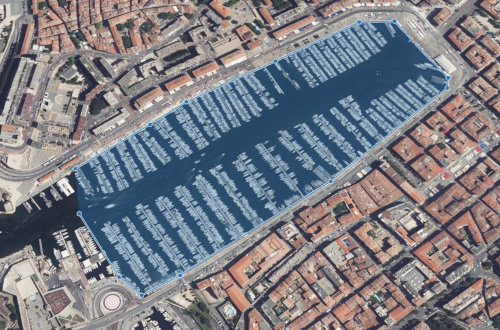
Digitizing vector features
Draw vectors and add them to a map layer
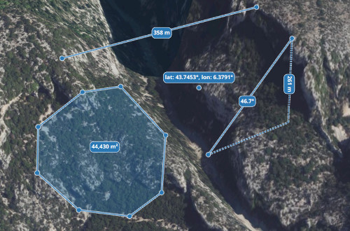
Draw shapes
Enables the user to draw points, lines and polygons.
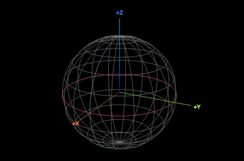
Ellipsoid
Visualize an ellipsoid.
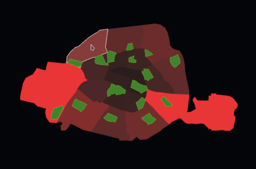
Reprojection of features as mesh
Illustrates the automatic reprojection of vectors to match the instance's CRS.
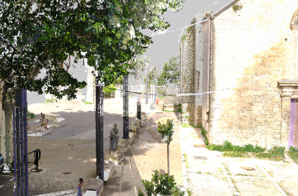
First Person Controls
Use first person controls to move in the scene
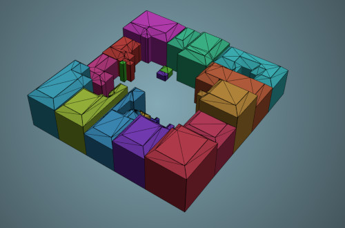
GeoJSON 3D
Represents 3D shapes from a GeoJSON file.
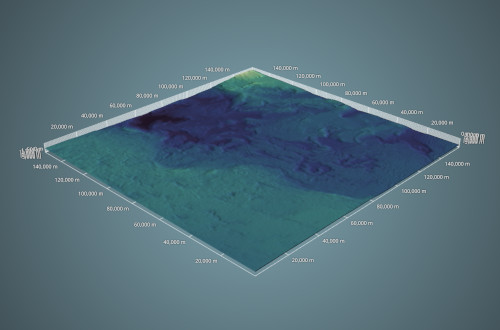
GeoTIFF Bathymetry
Display a fully underwater elevation layer using a GeoTIFF raster.
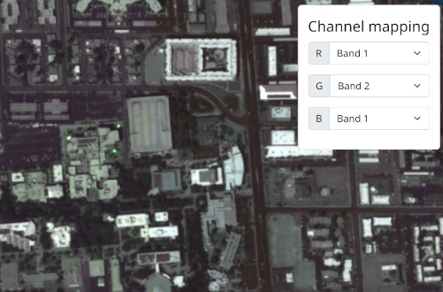
GeoTIFF channel mapping
Select which bands to view on GeoTIFFs with multiple bands.
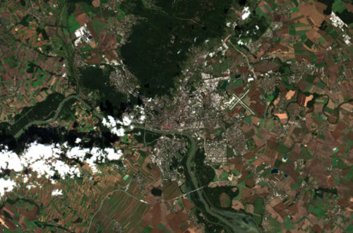
Cloud Optimized GeoTIFF (COG)
Display a color COG in various color spaces.
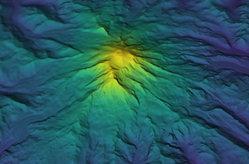
Elevation GeoTIFF
Display an elevation GeoTIFF with a color map.
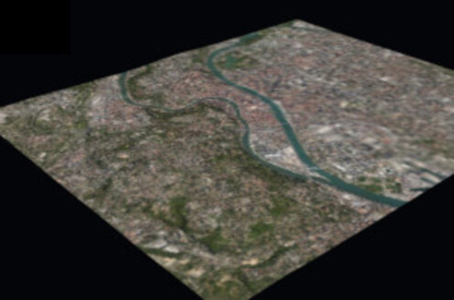
2.5D Map
Display a map with elevation.

Globe
Display a globe-shaped Map.
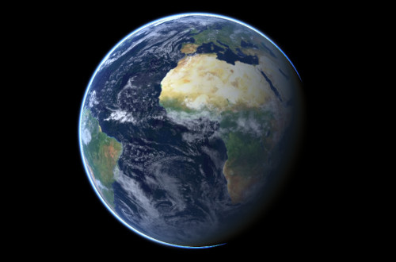
Globe
Display a globe-shaped Map.
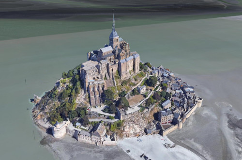
Google Photorealistic 3D Tiles
Display Google Maps 3D Tiles using Giro3D and 3d-tiles-renderer.
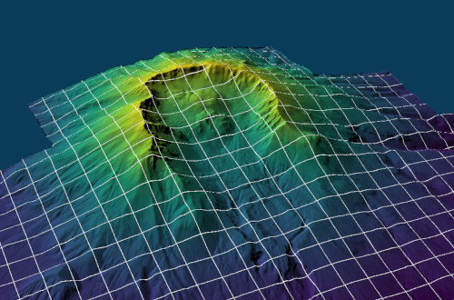
Graticule
Display a graticule on a Map.
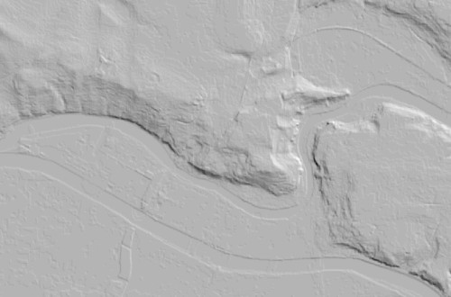
Hillshading & terrain
Illustrate the use of hillshading on maps with terrain.
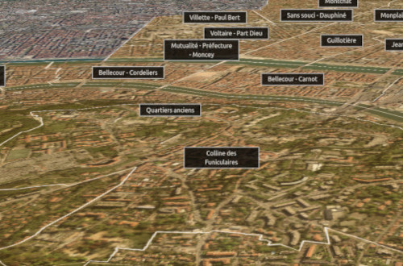
HTML labels
Display HTML labels in the 3D scene.
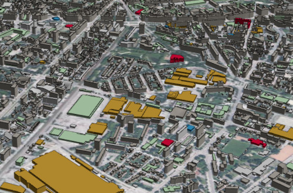
IGN data
Use data sources provided by the french geographic provider (IGN).
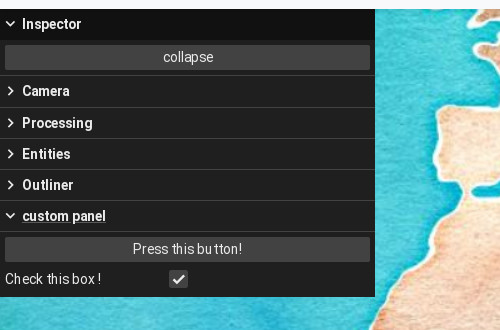
Inspector
Display the inspector with a custom panel.
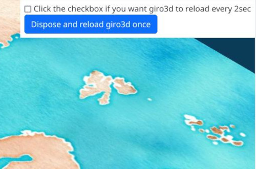
Dispose instance
Help to test if Giro3D correctly deallocates memory.
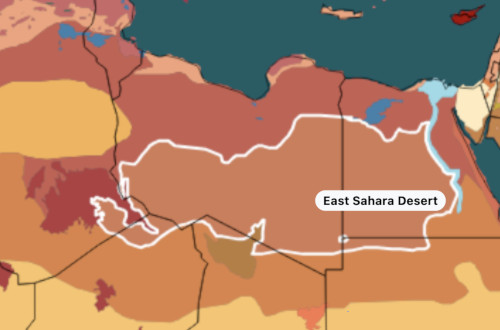
Interactive vector layer
Display interactive vector data on a Map.
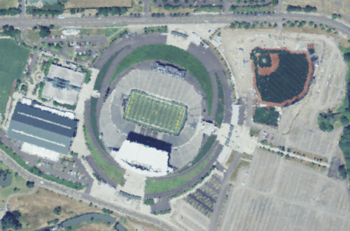
LAS/LAZ files.
Display a LAS/LAZ file.
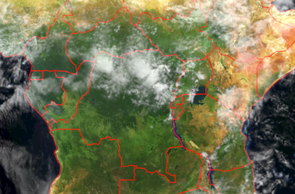
Blending modes
Assign various blending modes to a color layer.
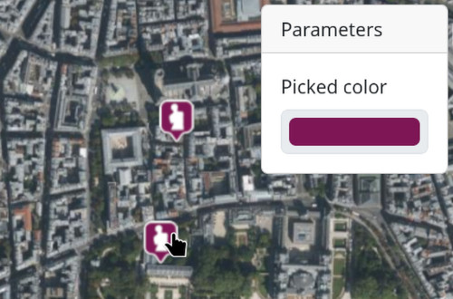
Sample layer color
Retrieve the pixel value of a layer at given coordinates.
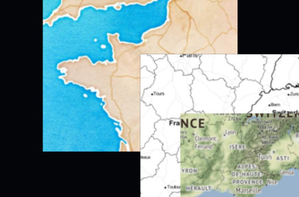
Change layer order
Move layers up and down in the map.
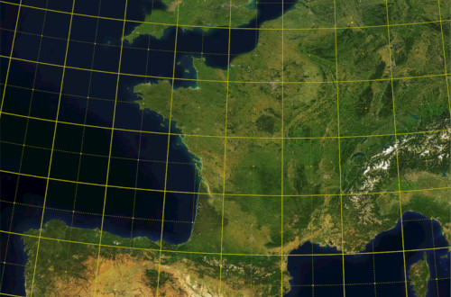
Layer reprojection
Reproject layers with heterogenous coordinate systems.
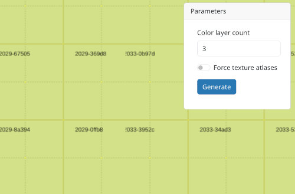
Color layer stress test
Stress test a map with many color layers.
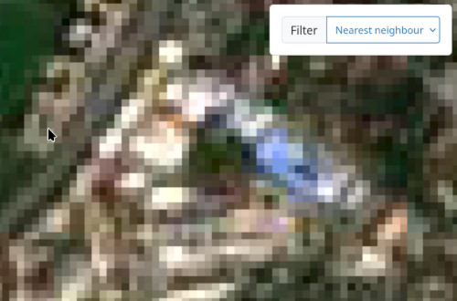
Layer texture filtering.
Illustrates various texture filtering modes on layers.
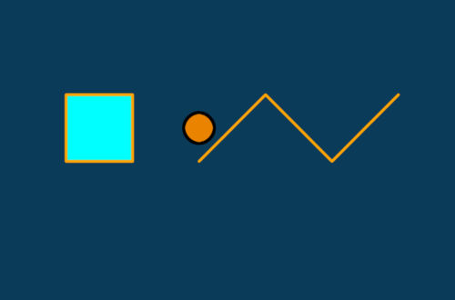
Dynamic layer updates
The layer is updated when the style changes.
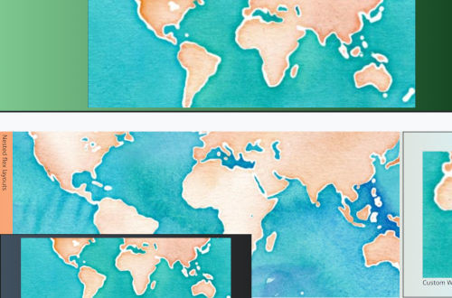
Multiple instances in different layouts
Display Giro3D scenes in with different layouts (flex, sticky, fixed, etc.).
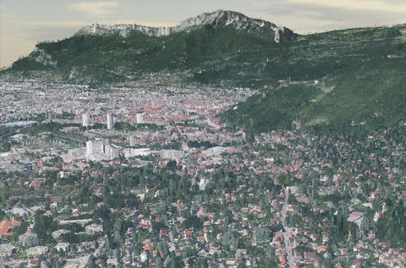
Pointcloud from IGN Lidar HD
Display a point cloud from the Lidar HD project. Colorized with a WMS layer.
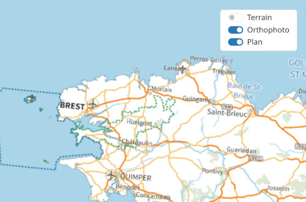
Add / Remove layers
Add and remove layers in a Map.
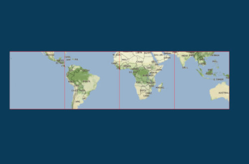
Arbitrary map extents
Create maps with arbitrary extents.
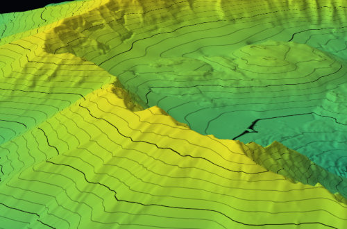
Contour lines
Use contour lines to display elevation levels.
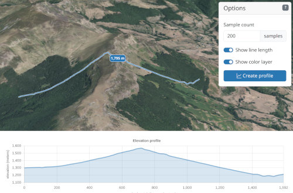
Elevation profile
Create an elevation profile using a Map and a path.
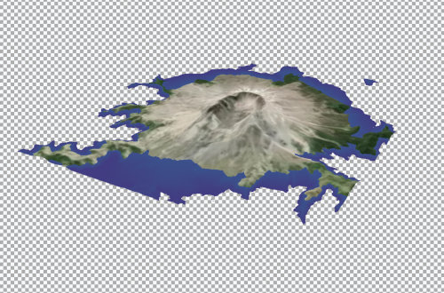
Elevation ranges
Limit the display of a color layer or a map within an elevation range.
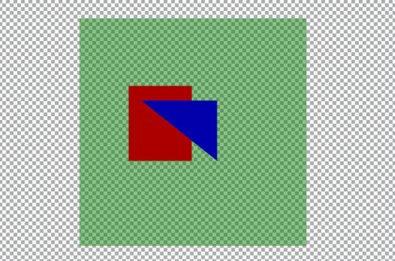
Types of opacity
Illustrates various types of opacity (map, map background, and layer)
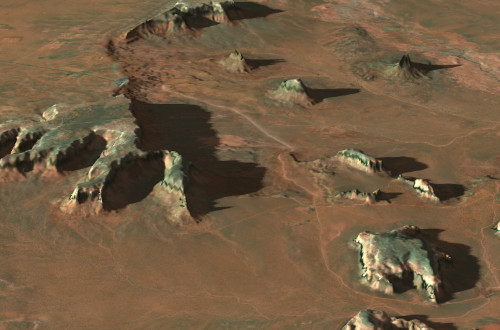
Physical lights and shadow maps
Illustrates the use of three.js physically accurate lights and shadows on Maps.